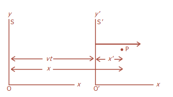
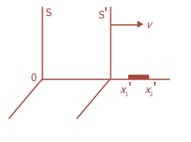

## Relativitas --- ### Relativitas - Relativitas merupakan salah satu dari beberapa teori mengenai gerak, yang dirancang untuk menjelaskan penyimpangan dari mekanika Newton yang timbul akibat gerak relatif yang sangat cepat. Teori ini telah mengubah pandangan kita mengenai ruang, waktu, massa, energi, gerak, dan gravitasi. - Teori ini terdiri atas teori khusus dan teori umum, yang keduanya bertumpu pada dasar matematika yang kuat dan keduanya telah diuji dengan percobaan-percobaan dan pengamatan. --- - Teori khusus, yang dikembangkan oleh Einstein pada tahun 1905, berkenaan dengan pembandingan pengukuran yang dilakukan dalam kerangka acuan inersia berbeda yang bergerak dengan kecepatan konstan relatif satu sama lain. - Teori umum, yang dikemukakan tahun 1915, berkenaan dengan kerangka acuan dan gravitasi yang dipercepat. Pada bab ini pembahasan akan lebih terfokus pada teori relativitas khusus. --- ### Relativitas Newton - Teori relativitas muncul dari kebutuhan terhadap kerangka acuan, yaitu suatu patokan yang dapat digunakan ilmuwan untuk menganalisis hukum gerak. - Pada waktu kelas X, kalian telah mempelajari Hukum Newton tentang gerak, di mana Hukum I Newton tidak membedakan antara partikel yang diam dan partikel yang bergerak dengan kecepatan konstan. --- - Jika tidak ada gaya luar yang bekerja, partikel tersebut akan tetap berada dalam keadaan awalnya, diam atau bergerak dengan kecepatan awalnya. Benda akan dikatakan bergerak apabila kedudukan benda tersebut berubah terhadap kerangka acuannya. - Kerangka acuan di mana Hukum Newton berlaku disebut kerangka acuan inersia. Jika kita memiliki dua kerangka acuan inersia yang bergerak dengan kecepatan konstan relatif terhadap yang lainnya, maka tidak dapat ditentukan bagian mana yang diam dan bagian mana yang bergerak atau keduanya bergerak. --- - Hal ini merupakan konsep Relativitas Newton, yang menyatakan “gerak mutlak tidak dapat dideteksi”. - Konsep ini dikenal oleh para ilmuwan pada abad ke-17. Tetapi, pada akhir abad ke-19 pemikiran ini berubah. Sejak saat itu konsep relativitas Newton tidak berlaku lagi dan gerak mutlak dideteksi dengan prinsip pengukuran kecepatan cahaya. --- ### Transformasi Galileo  - Pada sudut pandang klasik atau Galileo, jika terdapat dua kerangka acuan *S* dan *S′* yang masing-masing dicirikan dengan sumbu koordinat yang ditunjukkan Gambar, Sumbu *x* dan *x'* saling berimpitan, dan diasumsikan kerangka *S′* bergerak ke kanan (arah x) dengan kecepatan *v* relatif terhadap *S*. - Untuk menyederhanakan, diasumsikan bahwa acuan *O* dan *O'* dari kedua kerangka acuan saling berimpit pada *t=0*. --- - Sekarang, dimisalkan terjadi sesuatu di titik **P** yang dinyatakan dalam koordinat *x'*, *y'*, *z'* dalam kerangka acuan *S'* pada saat *t'*. - Bagaimana koordinat **P** di *S*? - Perlu diketahui, karena *S* dan *S'* mula-mula berimpitan, setelah *t*, *S'* akan bergerak sejauh *vt'*. Sehingga pada saat *t'* akan berlaku: --- **`$$x=x'+vt'$$` `$$y = y'$$` `$$z = z'$$` `$$t = t'$$`** --- #### Transformasi Galileo untuk Kecepatan - Titik **P** pada gambar menunjukkan sebuah benda yang bergerak. Komponen vektor kecepatannya di *S'* dimisalkan *u<sub>x</sub>'*, *u<sub>y</sub>'*, *u<sub>z</sub>'*. Diperoleh *`$$u_x'=\frac{{\mathrm {d}x'}}{{\mathrm {d}t'}}$$` `$$u_y'=\frac{{\mathrm {d}y'}}{{\mathrm {d}t'}}$$` `$$u_z'=\frac{{\mathrm {d}z'}}{{\mathrm {d}t'}}$$`* --- - Jika pada *t<sub>1</sub>'* partikel berada di *x<sub>1</sub>′* dan sesaat kemudian, *t<sub>2</sub>* berada di *x<sub>2</sub>′*, diperoleh: ###### `$$u_x'=\frac{\Delta x'}{\Delta t'}=\frac{x_2'-x_1'}{t_2'-t_1'}$$` - Jadi, kecepatan P seperti terlihat dari S akan memiliki komponen *u<sub>x</sub>'*, *u<sub>y</sub>'*, dan *u<sub>z</sub>'*. Untuk komponen yang berhubungan dengan komponen kecepatan di *S'*, diperoleh: --- `$$\begin{split}u_x&=\frac{\Delta x}{\Delta t}=\frac{x_2-x_1}{t_2-t_1}=\frac{(x_2'+vt_2')-(x_1'+vt_1')}{t_2'-t_1'}\\&=\frac{(x_2'-x_1')+v(t_2'-t_1')}{t_2'-t_1'}\\&=\frac{\Delta x'}{\Delta t'}+v \end{split}$$` ###### `$$u_x=u_x'+v$$` --- Dapat disimpulkan bahwa: ###### `$$u_x=u_x' + v$$` ###### `$$u_y=u_y'$$` ###### `$$u_z=u_z'$$` yang disebut persamaan **transformasi kecepatan Galileo**. --- #### Transformasi Galileo untuk Percepatan ###### `$$a_x=\frac{{\mathrm {d}u_x}}{{\mathrm {d}t}}=\frac{{\mathrm {d}u_x'}}{{\mathrm {d}t'}}=\frac{{\mathrm {d}(u_x' + v)}}{{\mathrm {d}t'}}=a_x'$$` ###### `$$a_y=\frac{{\mathrm {d}u_y}}{{\mathrm {d}t}}=\frac{{\mathrm {d}u_y'}}{{\mathrm {d}t'}}=a_y'$$` ###### `$$a_z=\frac{{\mathrm {d}u_z}}{{\mathrm {d}t}}=\frac{{\mathrm {d}u_z'}}{{\mathrm {d}t'}}=a_z'$$` --- ### Teori Relativitas Khusus - Albert Einstein (1879 - 1955) mendasarkan teorinya pada dua postulat, dan semua kesimpulan mengenai relativitas khusus diturunkan dari kedua postulat tersebut. --- #### 1. Postulat Pertama - Postulat pertama menyatakan, *“hukum-hukum fisika adalah sama dalam semua kerangka inersia”*. Postulat ini merupakan perluasan prinsip relativitas Newton untuk mencakup semua jenis pengukuran fisis (tidak hanya pengukuran mekanis). --- #### 1. Postulat Kedua - Postulat kedua berbunyi, *“kelajuan cahaya adalah sama dalam semua kerangka inersia”*. Postulat pertama dikemukakan karena tidak adanya acuan universal sebagai acuan mutlak. Sementara itu, postulat kedua memiliki implikasi yang sangat luas dengan kecepatan, panjang, waktu, dan massa benda yang semuanya bersifat relatif. --- - Postulat kedua menguraikan sifat sekutu semua gelombang. Misalnya, kecepatan bunyi tidak tergantung pada gerak sumber bunyi. Apabila mobil yang datang mendekat membunyikan klaksonnya, frekuensi yang terdengar akan meningkat sesuai dengan efek Doppler yang telah Anda pelajari, tetapi kecepatan gelombang yang merambat melalui udara tidak tergantung pada kecepatan mobilnya. Kecepatan gelombang hanya tergantung pada sifat udara, misalnya temperatur. --- ### Transformasi Lorentz - Transformasi Galileo hanya berlaku jika kecepatan-kecepatan yang digunakan tidak bersifat relativistik, yaitu jauh lebih kecil dari kecepatan cahaya, *c*. - Kita asumsikan transformasi bersifat linier dalam bentuk: --- **`$$x=\gamma(x'+vt')$$` `$$y = y'$$` `$$z = z'$$` `$$t = \gamma(t'+\frac{vx'}{c^2})$$`** Keterangan: - *γ* = tetapan transformasi --- - Kita asumsikan bahwa *y* dan *z* tidak berubah karena diperkirakan tidak terjadi kontraksi panjang pada arah ini. Persamaan invers harus memiliki bentuk yang sama di mana *v* diganti dengan *-v*, sehingga diperoleh: --- Invers dari persamaan di atas: **`$$x'=\gamma(x-vt)$$` `$$y' = y$$` `$$z' = z$$` `$$t' = \gamma(t+\frac{vx}{c^2})$$`** --- | Transformasi | ¦ | Invers | | ---- | --- | --- | | `$$x=\gamma(x'+vt')$$` | ¦ | `$$x'=\gamma(x-vt)$$` | | `$$y = y'$$` | ¦ | `$$y' = y$$` | | `$$z = z'$$` | ¦ | `$$z' = z$$` | | `$$t = \gamma(t'+\frac{vx'}{c^2})$$` | ¦ | `$$t' = \gamma(t-\frac{vx}{c^2})$$` | --- - Jika sebuah berkas cahaya meninggalkan titik acuan *S* dan *S'* pada *t* = *t'* = 0, setelah waktu *t* akan menempuh sumbu *x* sejauh **`$x = ct$`** (di *S*), atau **`$x' = ct'$`** (di *S'*). --- | **`$$x = ct$$`** | ¦ | **`$$x' = ct'$$`** | | ---- | --- | --- | | **`$$\gamma(x'+vt')=ct$$`** | ¦ | **`$$\gamma(x-vt)=ct'$$`** | | **`$$\gamma(ct'+vt')=ct$$`** | ¦ | **`$$\gamma(ct-vt)=ct'$$`** | | **`$$ct=\gamma t'(c+v)$$`** | ¦ | **`$$ct'=\gamma t(c-v)$$`** | | **`$$t=\frac{\gamma t'(c+v)}{c}$$`** | ¦ | **`$$t'=\frac{\gamma t(c-v)}{c}$$`** | --- `$$ct=\gamma t'(c+v)$$` `$$ct=\gamma (\frac{\gamma t(c-v)}{c})(c+v)$$` `$$1=\frac{\gamma^2 (c^2-v^2)}{c^2}$$` `$$\gamma^2=\frac{c^2}{c^2-v^2}$$` --- `$$\gamma^2=\frac{c^2}{c^2-v^2}$$` `$$\gamma^2=\frac{1}{1-\frac{v^2}{c^2}}$$` Nilai tetapan transformasi *γ*: ###### `$$\gamma=\frac{1}{\sqrt{1-\frac{v^2}{c^2}}}$$` --- ### Transformasi Lorentz untuk kecepatan `$$\begin{split}u_x&=\frac{\Delta x}{\Delta t}=\frac{\gamma(\Delta x'+v\Delta t')}{\gamma(\Delta t'+\frac{v\Delta x'}{c^2})}\\&=\frac{\frac{\Delta x'}{\Delta t'}+v}{1+(\frac{v}{c^2})(\frac{\Delta x'}{\Delta t'})}\end{split}$$` ###### `$$u_x=\frac{u_x'+v}{1+\frac{u_x'v}{c^2}}$$` --- `$$\begin{split}u_x'&=\frac{\Delta x'}{\Delta t'}=\frac{\gamma(\Delta x-v\Delta t)}{\gamma(\Delta t-\frac{v\Delta x}{c^2})}\\&=\frac{\frac{\Delta x}{\Delta t}-v}{1-(\frac{v}{c^2})(\frac{\Delta x}{\Delta t})}\end{split}$$` ###### `$$u_x'=\frac{u_x-v}{1-\frac{u_xv}{c^2}}$$` --- Keterangan: - *u<sub>x</sub>* = kecepatan benda *P* terhadap kerangka acuan diam (*S*) - *u<sub>x</sub>'* = kecepatan benda *P* terhadap kerangka acuan bergerak (*S'*) - *v* = kecepatan kerangka acuan bergerak (*S'*) terhadap kerangka acuan diam (*S*) - *c* = kecepatan cahaya dalam ruang hampa = 3×10<sup>8</sup> m/s --- ### Dilatasi Waktu - Akibat penting postulat Einstein dan transformasi Lorentz adalah bahwa selang waktu antara dua kejadian yang terjadi pada tempat yang sama dalam suatu kerangka acuan selalu lebih singkat daripada selang waktu antara kejadian sama yang diukur dalam kerangka acuan lain yang kejadiannya terjadi pada tempat yang berbeda. --- - Pada dua kejadian yang terjadi di *x<sub>0</sub>'* pada waktu *t<sub>1</sub>'* dan *t<sub>2</sub>'* dalam kerangka acuan *S'*, kita dapat menentukan waktu *t<sub>1</sub>* dan *t<sub>2</sub>* untuk kejadian ini dalam kerangka acuan *S* dari persamaan: | `$$t_1 = \gamma(t_1'+\frac{{vx'}_0}{c^2})$$` | ¦ | `$$t_2 = \gamma(t_2'+\frac{{vx'}_0}{c^2})$$` | | ---- | --- | --- | --- Sehingga, dari kedua persamaan tersebut diperoleh: `$$t_2-t_1 = \gamma(t_2'-t_1')$$` - Waktu di antara kejadian yang terjadi pada tempat yang sama dalam suatu kerangka acuan disebut **waktu patut**, *t<sub>p</sub>*. Dalam hal ini, selang waktu `$Δt_p = t_2' – t_1'$` yang diukur dalam kerangka *S'* adalah waktu patut. Selang waktu *Δt* yang diukur dalam kerangka sembarang lainnya selalu lebih lama dari waktu patut. --- - Pemekaran waktu ini disebut dilatasi waktu, yang besarnya: ###### `$$\Delta t = γ\Delta tp$$` ###### `$$\Delta t = \frac{\Delta tp}{\sqrt{1-\frac{v^2}{c^2}}}$$` --- Keterangan: - *Δt* = Pemekaran/Dilatasi waktu - *Δt<sub>p</sub>* = waktu patut, selang waktu antara dua kejadian dalam suatu kerangka acuan - *γ* = tetapan transformasi --- ### Kontraksi Panjang - Kontraksi panjang adalah penyusutan panjang suatu benda akibat gerak relatif pengamat atau benda yang bergerak mendekati cepat rambat cahaya. - Penyusutan panjang yang terjadi merupakan suatu fenomena yang berhubungan dengan pemekaran waktu. - Panjang benda yang diukur dalam kerangka acuan di mana bendanya berada dalam keadaan diam disebut panjang patut (panjang benda menurut pengamat), *l*. ---  - Kita tinjau sebatang tongkat dalam keadaan diam di *S'* dengan satu ujung di *x<sub>2</sub>'* dan ujung lainnya di *x<sub>1</sub>'*, seperti pada gambar. Panjang tongkat dalam kerangka ini adalah *`$l = x_2' – x_1'$`*. --- - Untuk menentukan panjang tongkat di kerangka *S*, didefinisikan bahwa *`$l = x_2 - x_1$`*. Berdasarkan persamaan `$x'=\gamma(x-vt)$` akan diperoleh: `$$x_2'=γ(x_2–vt_2)$$` dan `$$x_1'=γ(x_1–vt_1)$$` --- - Karena waktu pengukuran *x<sub>1</sub>* sama dengan waktu pengukuran *x<sub>2</sub>*, maka *t<sub>1</sub>* = *t<sub>2</sub>*, sehingga, `$$x_2'-x_1'=γ(x_2–vt)-γ(x_1–vt)=γ(x_2–x_1)$$` `$$x_2–x_1=\frac 1 γ (x_2'-x_1')$$` `$$x_2–x_1=\sqrt{1-\frac{v^2}{c^2}} (x_2'-x_1')$$` ###### `$$l=\frac 1 γ l_0=\sqrt{1-\frac{v^2}{c^2}}l_0$$` --- Keterangan: - *l* = Kontraksi panjang (panjang benda menurut pengamat) - *l<sub>0</sub>* = panjang benda sebenarnya - *v* = kecepatan benda --- ### Massa Relativistik - Menurut teori relativitas khusus, massa relativistik *m* dari sebuah partikel yang bergerak dengan laju *v* terhadap pengamat dinyatakan: ###### `$$m=\frac{m_0}{\sqrt{1-\frac{v^2}{c^2}}}$$` Keterangan: - *m* = massa relativistik - *m<sub>0</sub>* = massa benda sebenarnya - *v* = kecepatan benda --- ### Momentum Relativistik - Berdasarkan hukum kekekalan momentum linier dalam relativitas umum, maka didefinisikan kembali momentum sebuah partikel yang massa diamnya *m<sub>0</sub>* dan lajunya *v* adalah: ###### `$$p=mv=\frac{m_0v}{\sqrt{1-\frac{v^2}{c^2}}}$$` Keterangan: - *p* = momentum relativistik; *m* = massa relativistik - *m<sub>0</sub>* = massa benda sebenarnya; *v* = kecepatan benda --- ### Energi Relativistik - Menurut teori relativitas khusus, Hukum Newton `$F=ma$` hanya benar ketika ditulis sebagai `$F=\frac{\mathrm d}{\mathrm d t}(mv)$`. - Ketika massa benda tidak berubah, maka persamaan itu akan menjadi ###### `$$F=m\frac{\mathrm d v}{\mathrm d t}=ma$$` --- - Tetapi ketika massa benda bisa berubah (relativistik), maka persamaaan di atas menjadi ###### `$$F=\frac{\mathrm d}{\mathrm d t}(mv)=m\frac{\mathrm d v}{\mathrm d t}+v\frac{\mathrm d m}{\mathrm d t}$$` - Energi kinetik dapat diturunkan dari definisinya sebagai usaha yang diperlukan untuk membuat benda yang tadinya diam menjadi bergerak, yakni besarnya gaya yang dikerjakan dikalikan dengan perpindahannya. ###### `$$EK =\int^s_0 F\space \mathrm d s$$` --- - Dengan `$F=\frac{\mathrm d}{\mathrm d t}(mv)$`, persamaan di atas menjadi: `$$\begin{split}EK &=\int^s_0 \frac{\mathrm d (mv)}{\mathrm d t}\space \mathrm d s=\int^{mv}_0 v\space \mathrm d (mv)\\&=\int^{mv}_0 v\space \mathrm d \bigg( \frac{m_0v}{\sqrt{1-\frac{v^2}{c^2}}}\bigg)\end{split}$$` --- - Persamaan di atas dapat diselesaikan dengan identitas turunan `$\int x \space\mathrm d y=xy-\int y \space\mathrm d x$`, menjadi `$$\begin{split}EK &=\frac{m_0v^2}{\sqrt{1-\frac{v^2}{c^2}}}-m_0\int^v_0 \frac{v \space\mathrm d v}{\sqrt{1-\frac{v^2}{c^2}}}\\&=\frac{m_0c^2}{\sqrt{1-\frac{v^2}{c^2}}}-m_0c^2\\&=mc^2-m_0c^2\end{split}$$` --- - Keterangan: - *m* = massa relativistik - *m<sub>0</sub>* = massa benda sebenarnya - *v* = kecepatan benda